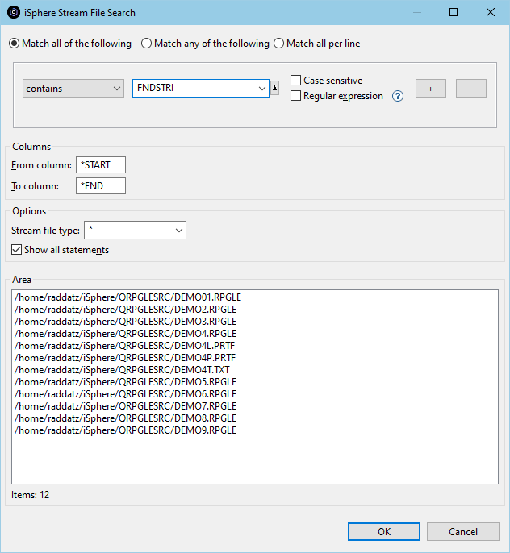
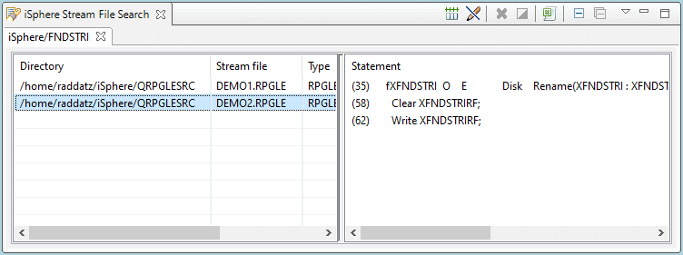
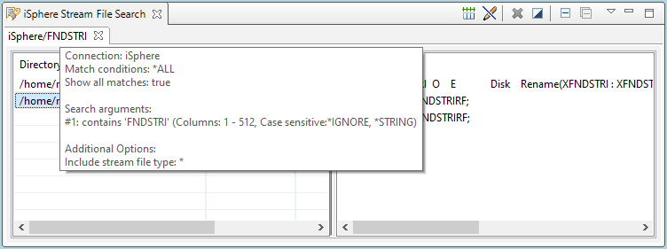
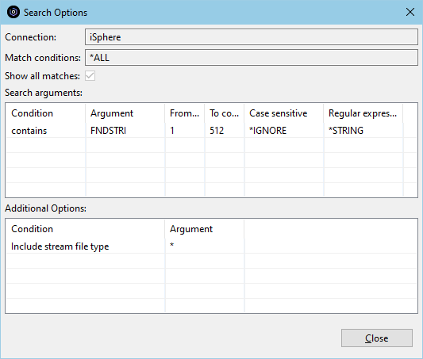

The Stream File Search feature provides an extremely fast search of IFS
stream files on the server. The first time after an IPL, iSphere Stream File
Search may take a little longer, but you should see the improvement in subsequent
runs.
The Stream File Search feature provides an extremely fast search of IFS
stream files on the server. The first time after an IPL, iSphere Stream File
Search may take a little longer, but you should see the improvement in subsequent
runs.
To search IFS stream files on a server:

The match options are:
| Match all of the following | - | The source member is added to the result view, when all conditions are met for the source member. |
| Match any of the following | - | The source member is added to the result view, when one or more conditions are met for the source member. |
| Match all per line | - | The source line is added to the result view, when all conditions for a single source line are met. |
The available options are:
| Columns | - | Specifies the column range of the source line that is searched for the search argument. |
| Stream file type | - | Specifies the (*generic*) file extension of the stream files that are included in the search. |
| Show all statements | - | Specifies whether all matching records of a IFS stream file are returned. |
| Note: The plug-in uses the IBM regular expression functions, which are less powerful than the Java or GNU regular expression functions. For example look-ahead and look-behind are not supported. |
After the search finishes on the host, the "iSphere Source File Search" view appears:

In the left pane click on a member and a preview of the statement(s) containing the search string in the member appears in the right pane. You can change the sort order by clicking on the column head line.
Double click on a member in the left pane to open the the member in the Lpex editor with the cursor at the top of the member. (You can specify whether Lpex opens in edit of browse mode in the iSphere 'Search' preferences.)
Double click on a line in the right pane to open the the member in the Lpex editor with the cursor at that line. (You can specify whether Lpex opens in edit of browse mode in the iSphere 'Search' preferences.)
Right click on a member or statement entry to open a context menu.

Available menu option are:
 |
- | Starts the Lpex editor for the selected source stream file. |
 |
- | Starts the Lpex editor in browse mode for the selected source stream file. |
 |
- | Selects all entries of the stream file table. |
 |
- | Removes the selection for all entries of the stream file table. |
 |
- | Inverts the selection of the stream file table. |
 |
- | Copies the selected items of the stream file table to the clipboard. |
 |
- | Removes the selected entry from the stream file table. |
The additional icons at the top at of the view and their meanings are:
 |
- | Resets all columns to their default size. |
 |
- | Starts the Lpex editor in browse mode when double-clicking a source stream file. |
 |
- | Closes the active tab. |
 |
- | Closes all tabs. |
Use the view menu to save and load search results:

| Load | - | Loads search results from a given file. If the selected file contains more than one search result, the user is asked whether or not he wants to replace the existing tabs. Otherwise a new tab is added to the view. |
| Save | - | Save the selected search result to a given file. |
| Save all | - | Save the content of all search results to a given file. |
| Auto-save | - | Enabled or disables the auto-save feature. When auto-save is enabled, the content of the view is automatically save to a pre-defined file. See the iSphere 'Search' preferences for details. |
You can hover the tab with the mouse to open a tooltip popup displaying the search options:

Or you can select Display Search Options from the context menu of the tab to open a window to see the search options:
